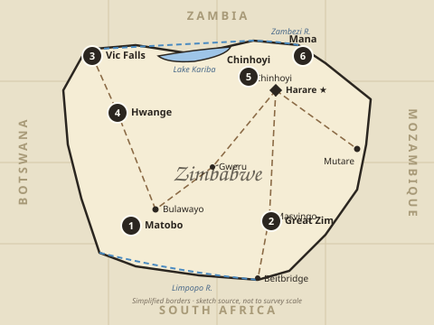
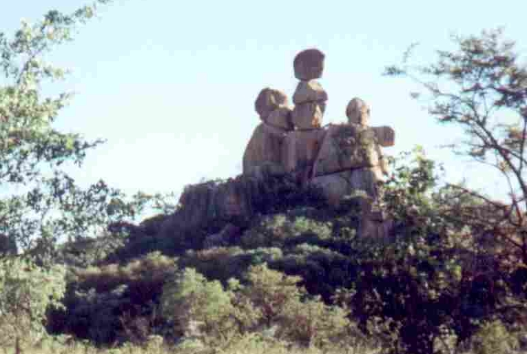
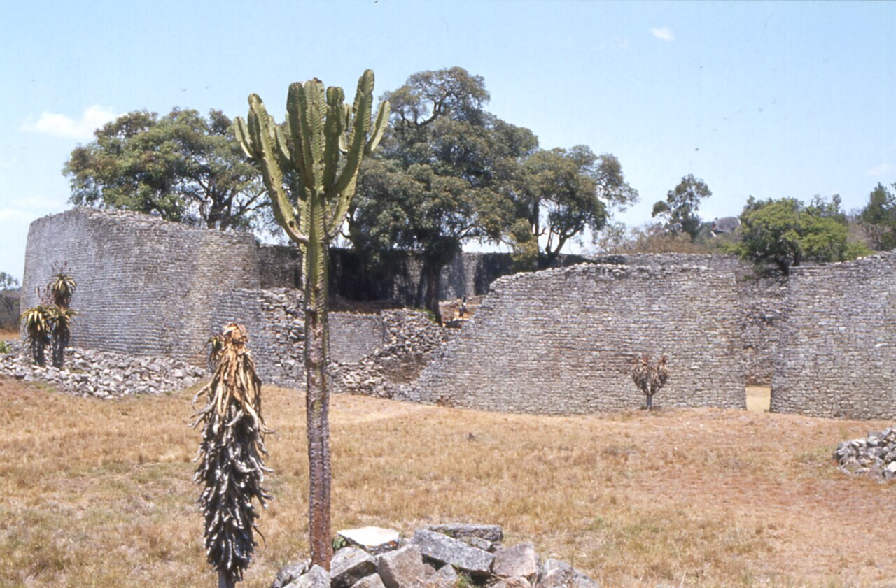
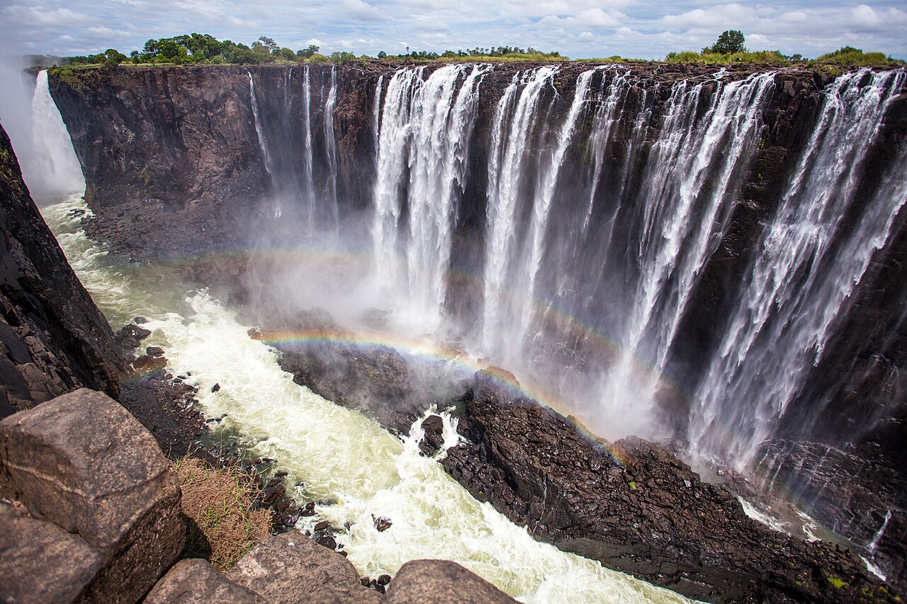
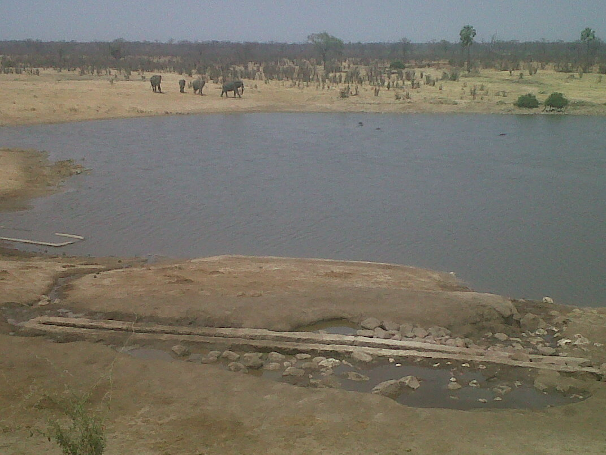
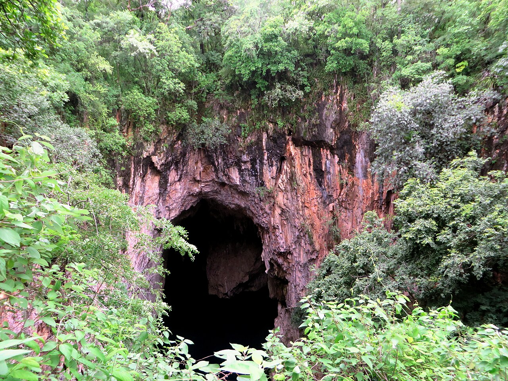
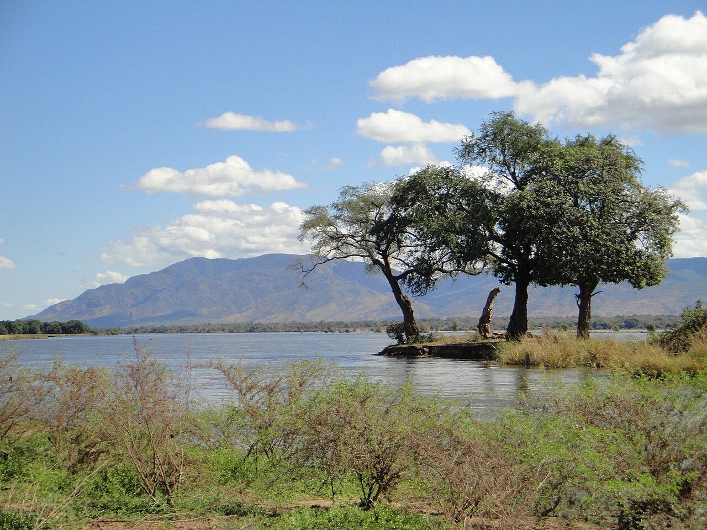

A real map + six real places. The pencil sketches each one tile by tile — and the sketch is all you ever see. Played one at a time, oldest story first.
✏️ Sketch only — no photos, no colour fills. Just the pencil.
Press Play — Ch.1 Matobo draws first. Or scroll to browse. Click any picture to watch the pencil draw it.
Chronology: ① Matobo rock art (~2,000 yrs) → ② Great Zimbabwe (1100s) → ③ Vic Falls (1855) → ④ Hwange (1928) → ⑤ Chinhoyi (1955) → ⑥ Mana Pools (1984 UNESCO)
✎ the pencil draws the country first
Where the stories sit
A real map of Zimbabwe — the pencil sketches it tile by tile, same as the six stops. You only ever see the drawing. Tap a numbered pin to jump to its sketch.

blank paper
Sketched from a real map in your browser — 37-vertex Natural Earth border (world.geo.json), neighbours faded. The map underneath is never shown, only the pencil sketch.
①
Matobo Hills
Matobo — “Bald Heads” · Ch.1 oldest
Rocks

blank paper
✏️ sketched from: Wikimedia Commons · Mother and Child Kopje, Matobo (Babakathy, Public Domain) · iStock Matopos Hills style · you only see the pencil drawing
The Mother and Child Kopje perched on a granite dome — the park’s signature balancing rocks. The same whaleback hills that shelter white rhinos and 2,000-year-old San rock paint, drawn stone by stone.
📍 Near Bulawayo⭐ UNESCO site🕒 Best: May–Sep
②
Great Zimbabwe
Dzimba-dze-Mabwe · Ch.2 kingdom
History

blank paper
✏️ sketched from: Wikimedia Commons · Great Enclosure wall (with euphorbia) · you only see the pencil drawing
Inside the Great Enclosure’s dry-stone walls — granite laid without mortar, a lone euphorbia in the foreground. The conical tower and Zimbabwe Bird lie just out of frame in the same walled city.
📍 Masvingo⭐ 11th–15th c.🕒 Best: Apr–Oct
③
Victoria Falls
Mosi-oa-Tunya · Ch.3 the Smoke
Waterfall

blank paper
✏️ sketched from: Anne Dirkse, Wikimedia Commons CC BY-SA · you only see the pencil drawing
1.7 km of white curtain plunging 108 m into the Batoka Gorge, rainbow arched in the spray. You hear Mosi-oa-Tunya — the Smoke that Thunders — before you see it.
📍 NW Zimbabwe⭐ 108m drop🕒 Best: Feb–May
④
Hwange Park
Elephant country · Ch.4 safari
Safari

blank paper
✏️ sketched from: Wikimedia Commons · Masuma Dam elephants, Hwange (Babakathy, CC0) · TripAdvisor Hwange traveler-photo style · you only see the pencil drawing
Four elephants on the far bank of Masuma Dam pan, hippos dotted in the water — dry-season Hwange. The 14,600 km² park holds ~45,000 elephants, plus lions, wild dogs and 400+ birds.
📍 Mat North⭐ ~45k elephants🕒 Best: Aug–Oct
⑤
Chinhoyi Caves
Chirorodziva · Ch.5 blue pool
Caves

blank paper
✏️ sketched from: Wikimedia Commons · Chinhoyi Wonder Hole (Sleeping Pool entrance) · you only see the pencil drawing
The great limestone arch of Chirorodziva — green canopy framing the dark mouth above the Sleeping Pool. Below, 92 m of cobalt-blue water where divers vanish.
📍 Mash West⭐ 92m deep pool🕒 Best: year-round
⑥
Mana Pools
Zambezi — “Four Pools” · Ch.6 finale
River

blank paper
✏️ sketched from: Wikimedia Commons · Zambezi island, Mana Pools (with Zambezi Escarpment) · you only see the pencil drawing
A tree-crowned island in the Zambezi, Escarpment hazy beyond — the canoe-safari heart of Mana. Elephants, hippos and painted dogs drink here, wild and UNESCO-listed.
📍 Lower Zambezi⭐ UNESCO 1984🕒 Best: Jun–Oct
Ch.1 / 6Stone Age
Matobo Hills
blank paper
One sketch at a time · pencil only, no photos
Your turn — pick a favourite?
Votes are counted in your browser (localStorage) — no server, just vibes.